고양이와 놀다 보면
어느새 배워요Play with a kitty,
learn without noticing
그림 퍼즐부터 한자·세계 국기·끝말잇기까지 열 가지 놀이와 영한·한영 사전. 로그인도, 인터넷도, 인앱 결제도 없이 바로 놀 수 있어요. Ten games from picture puzzles to Hanja, world flags and Korean word chain, plus a Korean–English dictionary. No login, no internet, no in-app purchases.
- Android
- iPhone
- iPad
- Mac
- Chromebook
- PC
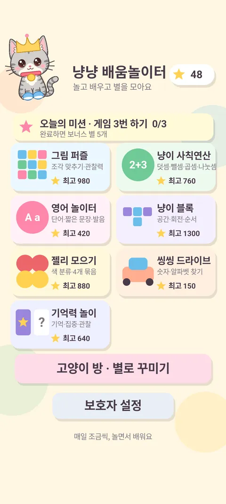
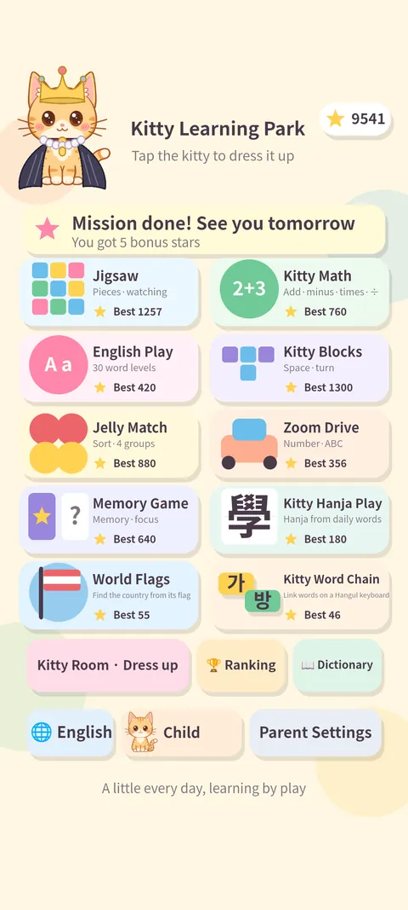
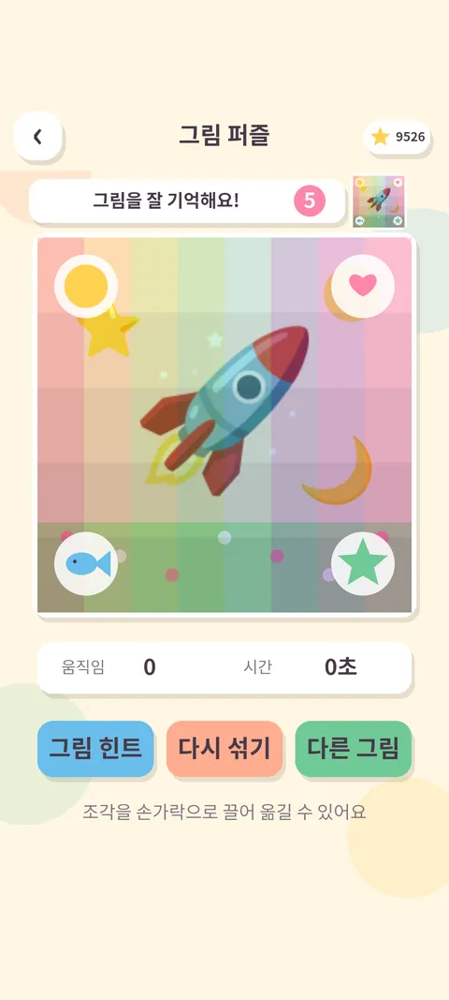
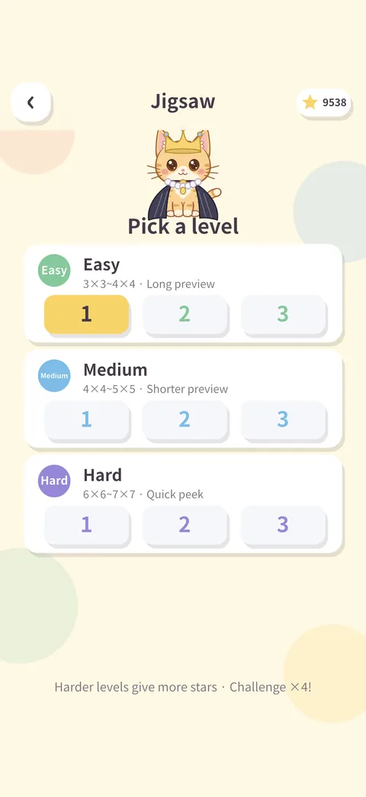
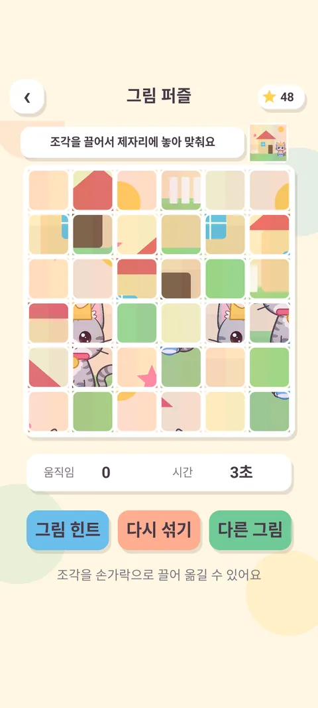
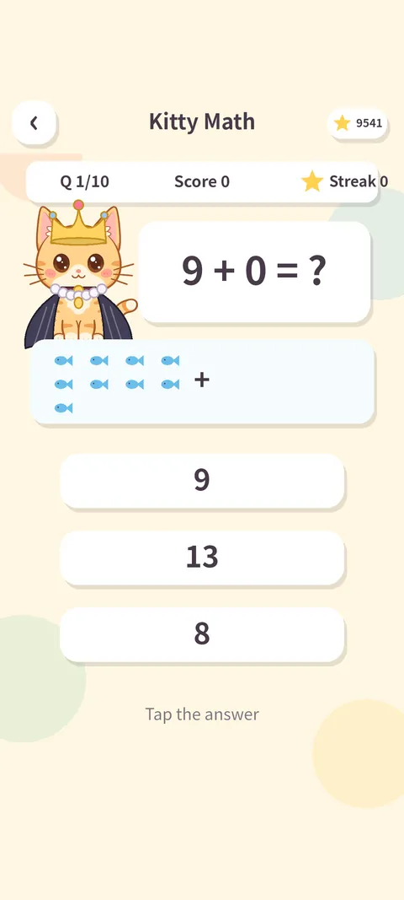
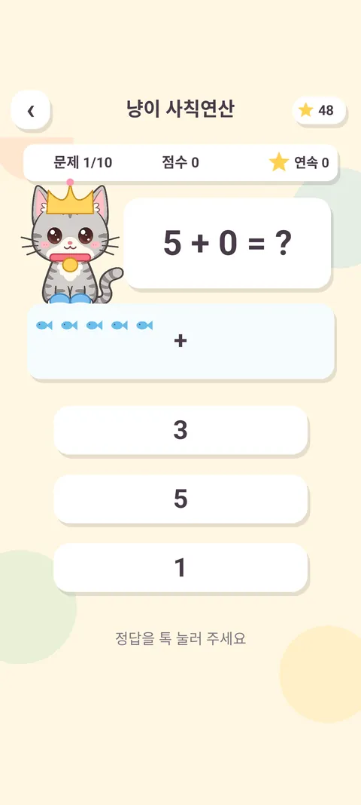
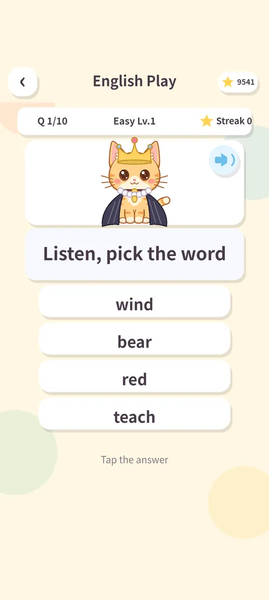
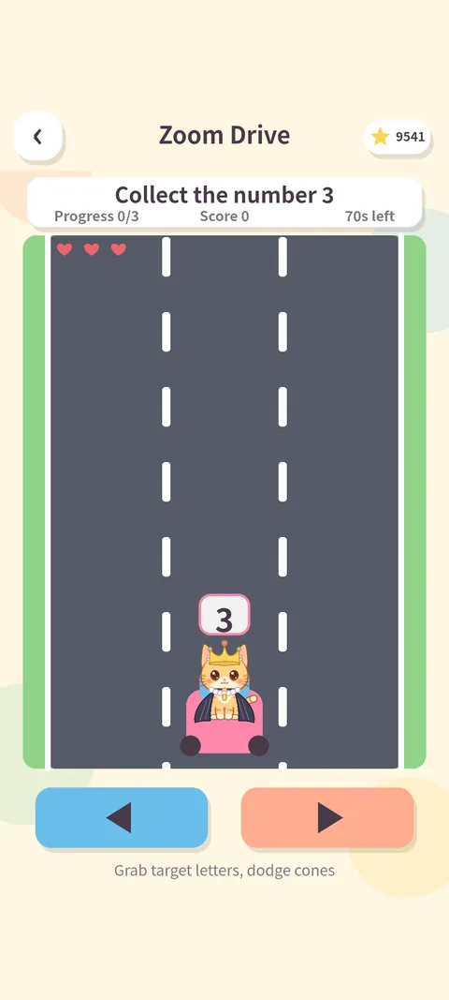
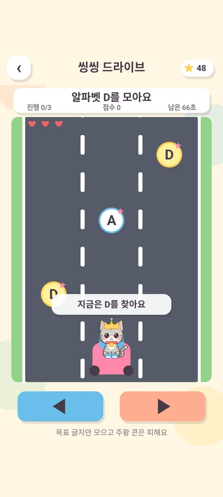
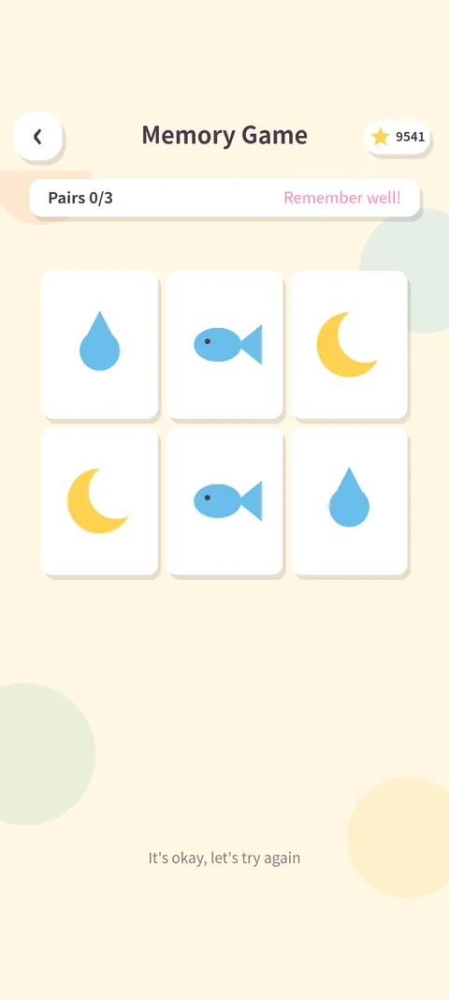
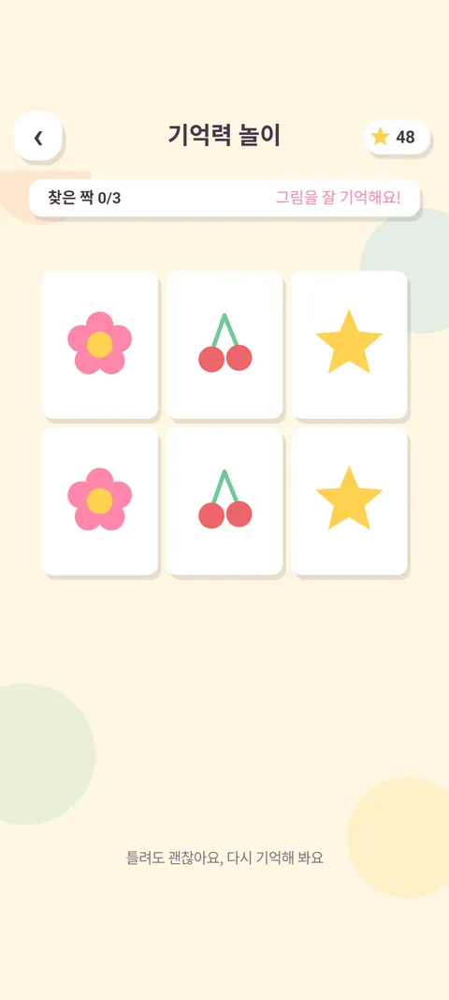
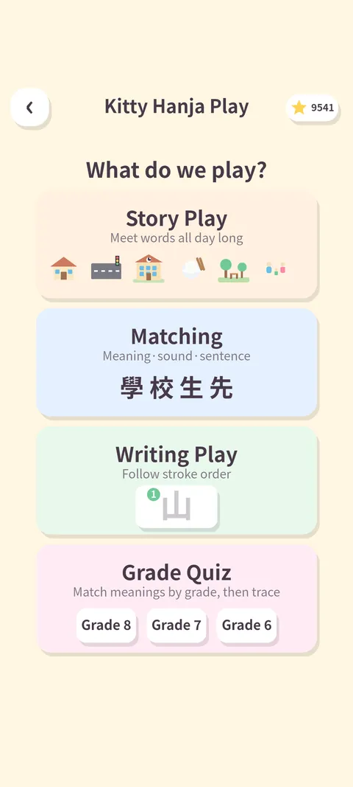
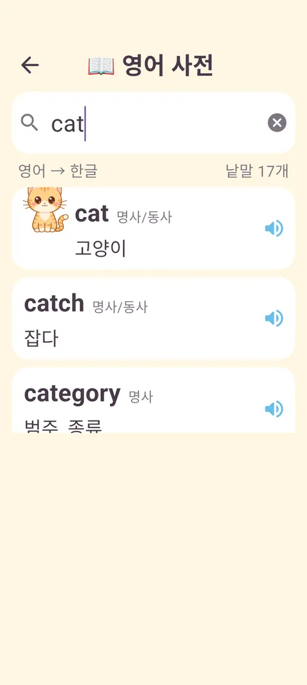
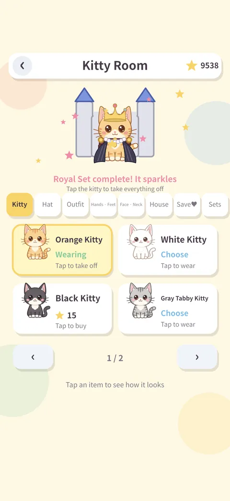
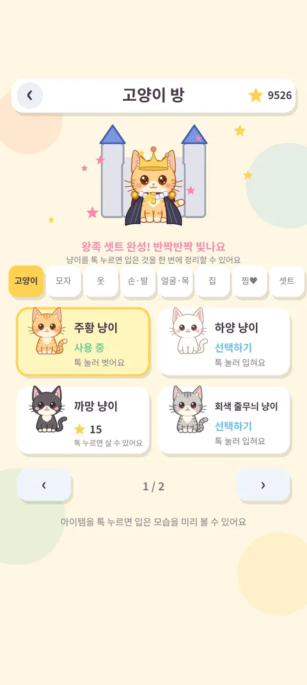
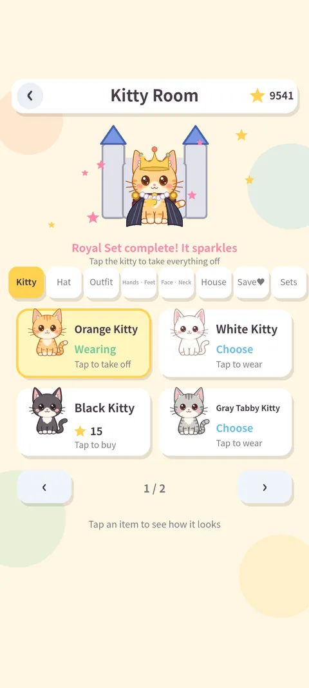
놀이 열 가지, 그리고 사전Ten games, plus a dictionary
놀이마다 쉬움·중간·어려움 9단계. 라운드가 짧고 틀려도 부드럽게 다시 해 볼 수 있어서 아이 혼자서도 이어 갑니다.Nine difficulty levels per game. Rounds are short and mistakes are gentle, so kids keep going on their own.
그림 퍼즐Picture Puzzle
조각을 끌어다 제자리에. 3×3 부터 5×5 까지, 그림 6종.Drag the pieces into place, 3×3 to 5×5, six pictures.
냥이 사칙연산Kitty Arithmetic
덧셈·뺄셈·곱셈·나눗셈을 세 보기 중에서 고르기. 어른용 "도전" 단계도.Add, subtract, multiply, divide — pick one of three. A grown-up "Challenge" tier too.
영어 놀이터English Playground
그림과 발음으로 만나는 단어와 짧은 문장. 맞히면 뜻과 예문 설명.Words and short sentences with pictures and pronunciation, then meaning and example.
냥이 블록Kitty Blocks
블록을 돌려 줄을 채우는 공간 놀이. 다음 조각 미리보기와 보관.Rotate blocks to fill lines, with next-piece preview and hold.
젤리 모으기Jelly Collect
같은 색 젤리를 넷 이상 이어 터뜨리기. 색 분류와 수 세기.Connect four or more jellies of a color — sorting and counting.
씽씽 드라이브Zoom Drive
길 위의 숫자·알파벳 표적을 찾아 모으고 장애물은 피하기.Collect number and letter targets on the road, dodge obstacles.
기억력 놀이Memory Play
카드 짝맞추기 · 순서 기억하기 · 사라진 그림 찾기.Card matching, sequence recall and spot-the-missing-picture.
냥냥한자놀이Kitty Hanja Play
생활 한자어를 이야기·맞추기·쓰기로. 급수별 낱글자 따라쓰기까지.Everyday Sino-Korean words through stories, quizzes and tracing, by grade.
세계 국기 놀이World Flags
국기를 보고 199개 나라 중에서 고르면 우리나라가 가운데인 지도에서 짚어 주고 이름을 읽어 줘요.Pick the country among 199, see it on a Korea-centered map, hear its name.
냥냥 끝말잇기Korean Word Chain
고양이와 번갈아 낱말 잇기. 막히면 힌트를 받고, "쥬스" 처럼 잘못 쓴 말도 받아 주면서 바른 표기를 알려 줘요.Take turns with the kitty linking words. Get a hint when stuck, and misspellings are accepted with the correct spelling shown.
영한·한영 사전Korean–English dictionary
궁금한 낱말을 기기 자판으로 치면 바로 찾아요. 영어를 치면 영한, 한글을 치면 한영. 낱말을 누르면 읽어 줍니다. 일상 낱말 3,000개에 놀이에서 본 낱말까지.Type a word with the device keyboard: English gives Korean, Korean gives English. Tap to hear it. 3,000 everyday words plus every word from the games.
이런 점이 좋아요What makes it nice
별을 모아 꾸미기Collect stars, dress up
고양이 6종과 모자·옷·신발, 고양이 집까지 360종. 갖고 싶은 건 찜해 두고 별을 모아요 — 놀이로 익히는 저축.Six kitties, hats, outfits, shoes and houses — 360 items. Wishlist one and save up: saving, learned by play.
아이마다 프로필A profile per child
별·아이템·기록·학습 진행도가 사람마다 따로 쌓여요. 아이 프로필과 어른 프로필이 다릅니다.Stars, items, records and progress are kept per person. Child and grown-up profiles differ.
랭킹Rankings
놀이별 최고 점수, 놀아 본 횟수, 누적 시간을 기기 안에서 확인해요.Best scores, play counts and total time, all on the device.
소리와 발음Sound and speech
놀이마다 다른 배경음악과 효과음. 영어 단어와 나라 이름은 기기 음성으로 읽어 줘요.Distinct music and effects per game; English words and country names are read aloud.
한국어 · EnglishKorean · English
홈에서 한 번 눌러 바꿔요. 화면 글자가 전부 바뀝니다.One tap on the home screen switches every label.
인터넷 없이Works offline
모든 놀이와 사전이 앱 안에 들어 있어요. 비행기에서도, 시골 할머니 댁에서도.Every game and the dictionary are inside the app — on a plane, at grandma's.
보호자를 위해For parents
아이는 놀이만, 설정은 어른만. 보호자 설정은 계산 문제(예: 6 × 3 + 4) 또는 4자리 PIN 으로 잠깁니다.Kids play, grown-ups set. Parent settings sit behind an arithmetic question (e.g. 6 × 3 + 4) or a 4-digit PIN.
사용 시간 제한Play-time limit
하루 15·30·45·60분 중 고르면 넘길 때 놀이가 잠시 멈춰요. 취침 시간대 잠금도 있어요.Pick 15–60 minutes a day; play pauses past the limit. A bedtime lock too.
학습장과 리포트Notebook and report
틀린 낱말·문제가 학습장에 모이고, 놀이별 정답률을 리포트로 봐요.Missed words and problems collect in a notebook; a report shows accuracy per game.
놀이별 켜고 끄기Per-game on/off
아직 이른 놀이는 홈에서 숨길 수 있어요. 글자 크기, 소리도 따로 조절합니다.Hide games that are too early. Text size and sound are adjustable too.
광고는 이렇게About ads
화면 아래 배너 하나뿐이고 아동 대상·비개인화로만 요청해요. 보상형 광고는 어른 프로필에서, 보호자 확인 뒤에만 나옵니다. 아이 프로필에는 절대 없어요.One banner at the bottom, child-directed and non-personalized. Rewarded ads appear only on grown-up profiles after the parental gate — never on a child profile.
개인정보와 안전Privacy and safety
계정도, 서버도, 채팅도 없습니다. 아이에게 이름·사진·위치 같은 것을 묻지 않습니다.No accounts, no server, no chat. The app never asks a child for a name, photo or location.
| 정보Data | 어디에Where it lives |
|---|---|
| 별 · 아이템 · 점수 · 프로필 · 학습 기록 · 설정Stars, items, scores, profiles, learning records, settings | 기기 안에만. 개발자에게 보내지 않아요On the device only, never sent to the developer |
| 권한Permissions | 카메라·마이크·위치·연락처 요청 없음. 인터넷은 광고 표시에만No camera, microphone, location or contacts. Internet only for the ad banner |
| 광고(Google AdMob)가 자동 처리하는 것Handled automatically by ads (Google AdMob) | IP 기반 대략적 위치, 기기 식별자, 광고 상호작용, 진단 정보 — 아동 대상·비개인화 요청, 추적 없음Coarse IP location, device identifiers, ad interaction, diagnostics — child-directed, non-personalized, no tracking |
| 지우기Deleting | 보호자 설정의 초기화, 또는 앱 삭제Reset in parent settings, or uninstall the app |
어디서든 같은 놀이The same games everywhere
코드가 한 벌이라 폰·태블릿·컴퓨터 어디서나 같은 그림, 같은 소리로 놀아요. 화면은 어떤 크기에서도 잘리지 않습니다.One codebase, so phones, tablets and computers all get the same pictures and sounds. Nothing gets cut off at any screen size.
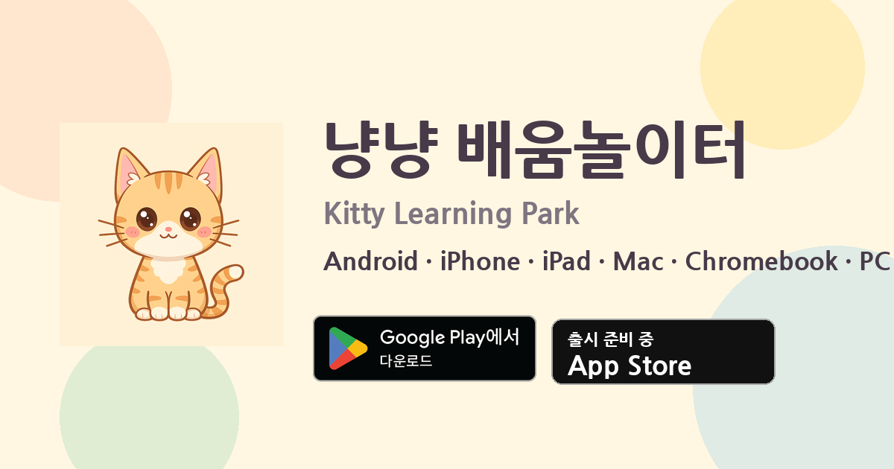
iPhone · iPad
App Store 출시를 준비하고 있어요. iOS 15 이상, 아이패드는 네 방향 모두 지원.Coming to the App Store. iOS 15 or later; iPad supports all orientations.
Mac
애플 실리콘 맥에 아이패드 판 그대로 설치돼요. 마우스 클릭·끌기가 터치와 똑같이 됩니다.Installs on Apple silicon Macs as the iPad app. Mouse click and drag work like touch.
Chromebook · PC
크롬북은 Google Play 에서, 윈도우 PC 는 Google Play Games 에서. 창 크기를 바꿔도 돼요.Chromebooks via Google Play, Windows PCs via Google Play Games. Resize the window freely.
자주 묻는 질문Questions
아이가 혼자 보호자 설정에 들어갈 수 있나요?Can a child get into parent settings alone?
두 연산이 섞인 계산 문제(보기 위치는 매번 무작위)나 4자리 PIN 을 지나야 합니다. 어른 프로필로 바꿀 때와 보상형 광고 전에도 같은 확인을 거칩니다.They must pass a two-step arithmetic question (answer positions shuffle every time) or a 4-digit PIN. The same gate guards switching to a grown-up profile and rewarded ads.
인터넷이 꼭 필요한가요?Do I need internet?
아니요. 놀이·사전·발음이 전부 앱 안에 있습니다. 인터넷은 화면 아래 배너 광고를 받아 올 때만 쓰고, 없으면 그 자리가 비어 있을 뿐입니다.No. Games, dictionary and speech are all inside the app. Internet is used only to fetch the banner ad; without it the banner space simply stays empty.
어떤 광고가 나오나요?What ads appear?
Google AdMob 배너 하나를 아동 대상·미성년 동의·최대 등급 G 로만 요청합니다. 개인 맞춤 광고와 추적은 쓰지 않습니다. 인앱 결제는 없습니다.One Google AdMob banner requested as child-directed, under-age-of-consent and max rating G. No personalized ads, no tracking, no in-app purchases.
기록을 지우려면요?How do I erase the records?
보호자 설정 → 초기화, 또는 앱 삭제. 모든 기록이 기기 안에만 있어서 그걸로 끝입니다. 프로필 하나만 지우는 것도 보호자 설정에서 합니다.Parent settings → Reset, or uninstall. Everything lives on the device, so that is all. Deleting a single profile is also in parent settings.
형제가 같이 써도 되나요?Can siblings share it?
네. 홈 아래 이름표를 눌러 사람을 바꾸면 별·아이템·기록이 따로 쌓입니다. 프로필 만들기는 보호자 설정 안에 있습니다.Yes. Tap the name tag on the home screen to switch; stars, items and records stay separate. Profiles are created in parent settings.
궁금한 점, 불편한 점Questions or problems
이메일로 보내 주세요. 보통 하루 안에 답합니다.Email us — we usually reply within a day.
kidcatlab@gmail.com